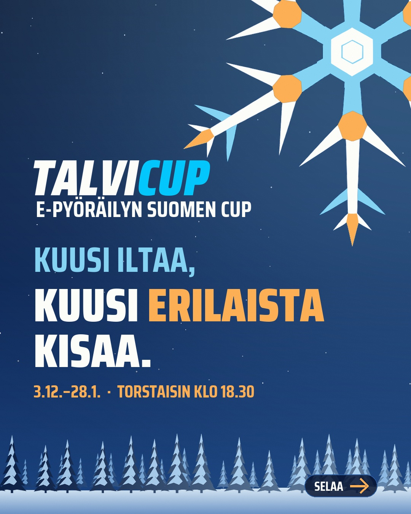
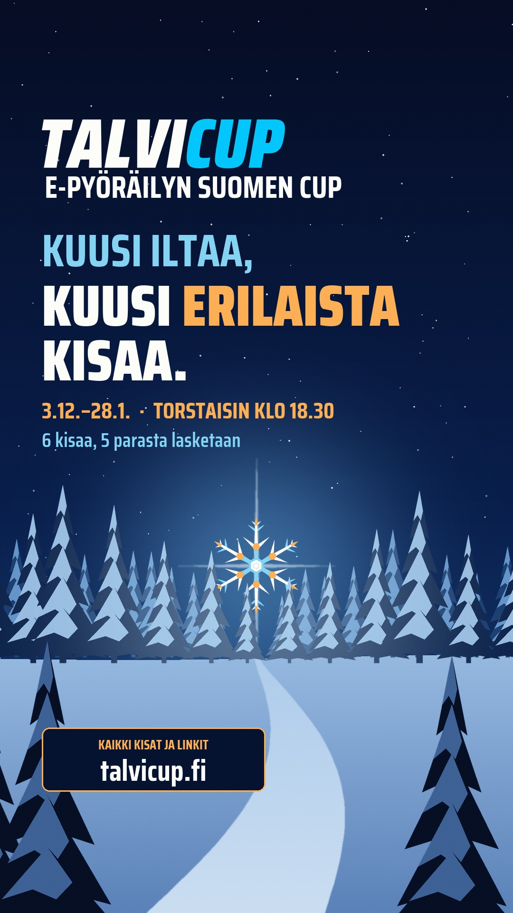
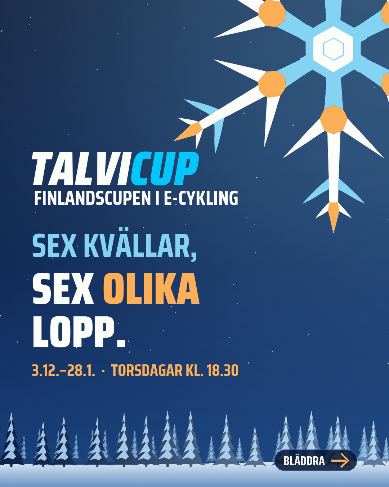
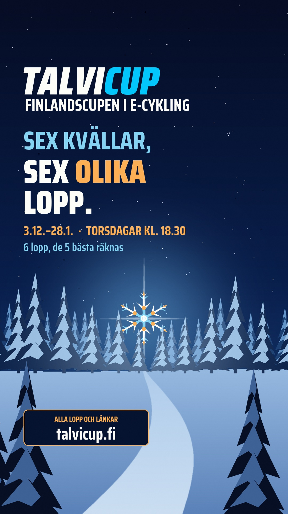

Kopioi ja julkaise
Valmis teksti
Suomeksi
E-pyöräilyn Suomen Cup – TalviCup 2027 ajetaan Zwiftissä kuutena torstaina 3.12.–28.1. klo 18.30. Sarja on avoin kaikille suomalaisille, kategoriat ovat U23, Avoin, 40+, 50+ ja 60+, ja viisi parasta kisaa lasketaan. Erillistä ilmoittautumista tai lisenssiä ei tarvita.
Sarjassa on tiimikilpailu, joten seuramme voi koota oman tiimin. Tiimin kolmen parhaan pisteet lasketaan joka kisassa kaikista kategorioista.
Tule mukaan viimeistään kisassa 2 (to 10.12.), niin kaikki viisi parasta lasketaan.
Kisalinkit ja säännöt: talvicup.fi
På svenska
TalviCup 2027 körs på Zwift sex torsdagar 3.12.–28.1. kl. 18.30. Serien är öppen för alla finländare, kategorierna är U23, Öppen (Avoin), 40+, 50+ och 60+, och de fem bästa tävlingarna räknas. Ingen separat anmälan eller licens behövs.
I serien finns en lagtävling, så vår förening kan ställa upp med ett eget lag. Lagets tre bästa åkares poäng räknas i varje tävling, från alla kategorier.
Var med senast i tävling 2 (torsdag 10.12.), så räknas alla dina fem bästa tävlingar.
Tävlingslänkar och regler: talvicup.fi
Juliste ja tarina
Kuvat
Avaa kuva ja tallenna se. Juliste (1080 × 1350) sopii syötteeseen ja verkkosivulle, tarina (1080 × 1920) Instagramin ja Facebookin tarinaan.








Kolme asiaa ennen kisaa 1
Kertokaa jäsenille
- ZwiftPower-tili on pakollinen, ja profiilissa pitää olla oikea maa, ikä ja sukupuoli.
- Lähtö valitaan ikäkategorian mukaan, ei tavallisen Zwift-kategorian (A–D) mukaan.
- Seuran tiimi on ZwiftPower-tiimi. Se valitaan profiiliin ennen ensimmäistä kisaa, koska tiimi lukittuu ensimmäiseen kisaan, jonka ajaja ajaa maaliin sen edustajana.